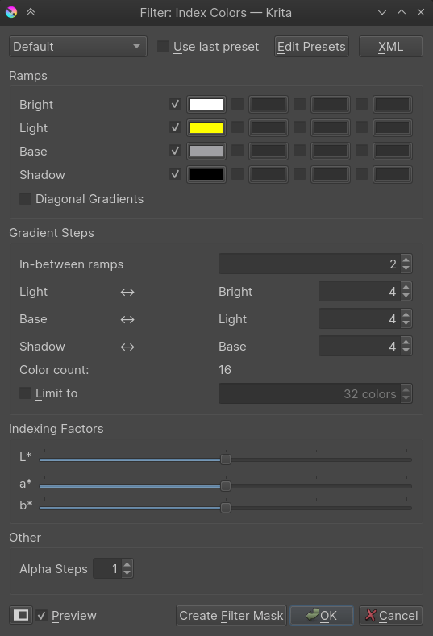
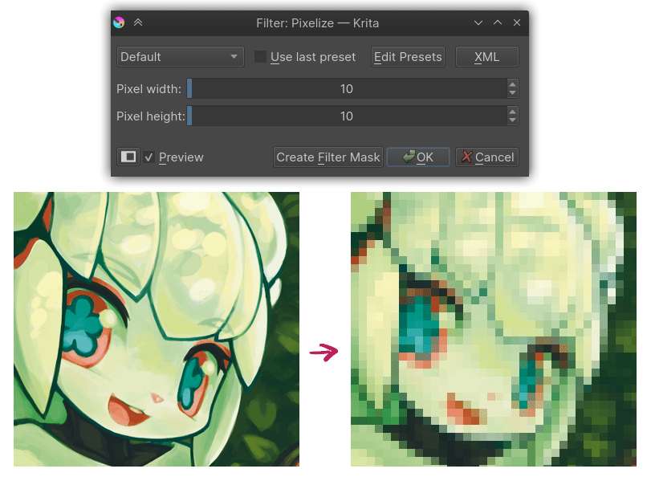
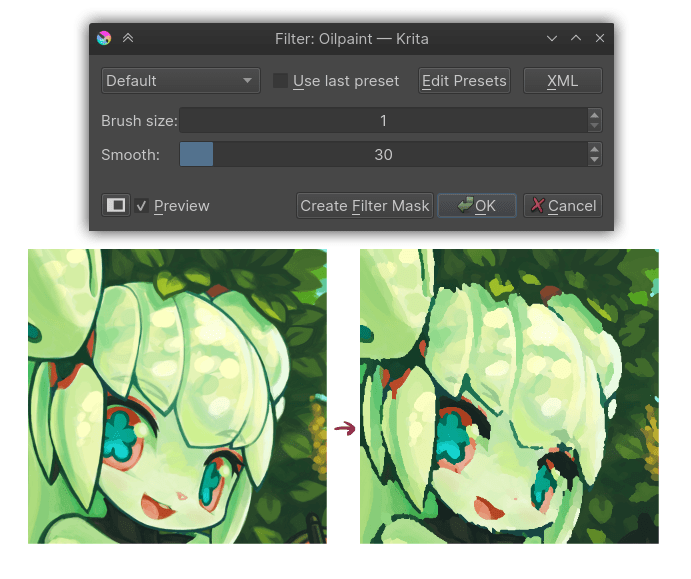

Artistic¶
The artistic filter are characterised by taking an input, and doing a deformation on them.
Halftone¶

The halftone filter tries to replicate the continuous-tone of the original image through the use of simple shapes that vary in size.
- Mode
- Intensity
In this mode the image is first converted to grayscale and then the halftoning is applied. The resulting effect is like the one used in black and white newspaper images.
- Independent Channels
This allows applying the halftoning to each channel of the image independently, potentially with different parameters, giving an effect similar to the one in colored magazine images.
- Alpha
With this option the halftoning is applied only to the alpha channel (you may see no change when all the pixels of the image are fully opaque). This is useful to add texture to the smooth semi-transparent borders of a layer.
- Halftoning Options
When the selected mode is Independent Channels, multiple tabs for the different channels appear to let the user choose different options for each one; otherwise no tabs for the channels appear and there is only one set of options. The halftoning process works by making a pattern image (commonly named screen) that is combined with the original image in a specific way.
- Screen Generator
The filter uses the fill layer generators to create the screen (pattern) image instead of using a predefined set of patterns and options. This way the range of possible results can grow as new generators are added to Krita. Also the user can make his own patterns by using the pattern generator and custom pattern images. For more information see this page on fill layer generators and their options.
- Postprocessing
These options apply to the result of combining the screen image with the original image.
- Hardness
Controls how hard or soft are the borders of the halftone shapes.
- Invert
Invert the resulting image/channel.
- Foreground & Background
Change what color and opacity are used for the foreground (part of the image formed by the pattern shapes) and the background.
Index Color¶
The index color filter maps specific user selected colors to the grayscale value of the artwork. You can see the example below, the strip below the black and white gradient has index color applied to it so that the black and white gradient gets the color selected to different values.
You can choose the required colors and ramps in the index color filter dialog as shown below .
You can create index painting such as one shown below with the help of this filter.
Pixelize¶
Makes the input-image pixely by creating small cells and inputting an average color.
Raindrops¶
Adds random raindrop-deformations to the input-image.
Oilpaint¶
Does semi-posterisation to the input-image, with the 'brush-size' determining the size of the fields.
- Brush-size
Determines how large the individual patches are. The lower, the more detailed.
- Smoothness
Determines how much each patch's outline is smoothed out.
Posterize¶
This filter decreases the amount of colors in an image. It does this per component (channel).

The Steps parameter determines how many colors are allowed per component.